UniPercept: A Unified Diffusion Model for Generalizable Visual Perception
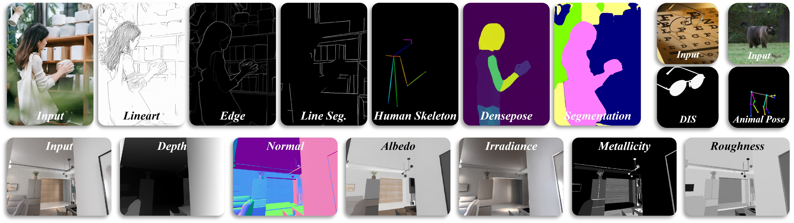
Overview of visual perception tasks supported by UniPercept, including structural, semantic, and material / lighting properties.
Abstract
Diffusion models have shown impressive performance in generative tasks, demonstrating their ability to capture detailed structural and semantic information. Recently, these capabilities have been extended to visual understanding, with studies employing diffusion models as the backbone for various perception tasks. However, existing diffusion-based perception models are generally restricted to a single task or a fixed set of predefined tasks, lacking an efficient mechanism to generalize to novel tasks. To overcome this limitation, we propose a unified DiT-based perception framework called UniPercept, which introduces a novel foundation-adapter paradigm for general visual perception. In this framework, a shared diffusion-based foundation model is trained to capture common and generalizable visual knowledge across diverse perception tasks, with task-specific adapters integrated for each individual task. Leveraging its superior generalization ability, the foundation model can be efficiently adapted to novel domains through lightweight adapters, requiring as few as 1,000 training samples and less than 1% of trainable parameters. Furthermore, UniPercept demonstrates strong performance across various perception tasks, outperforming state-of-the-art generalist models in most cases and achieving accuracy comparable to specialist models.
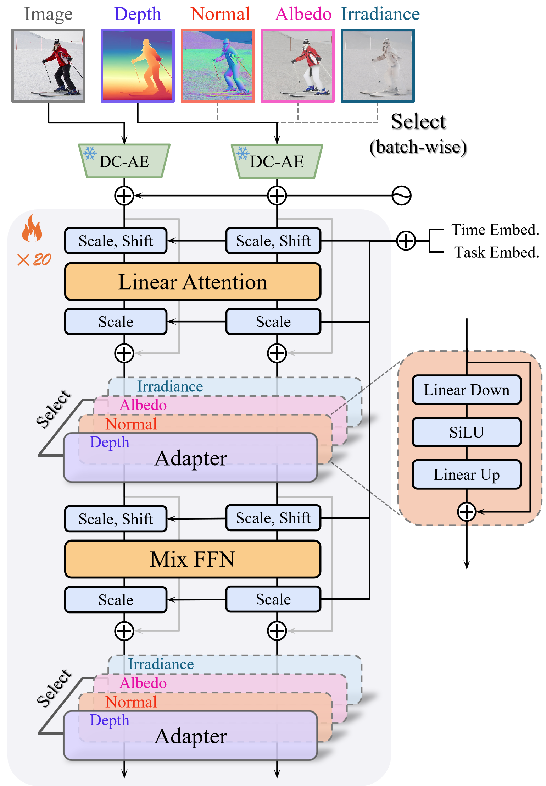
Results
Image-to-Depth
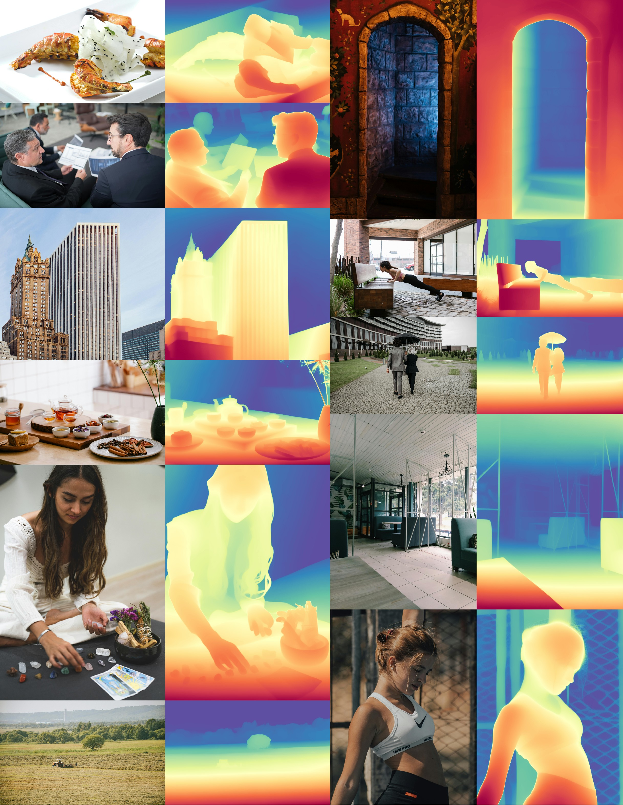
Image-to-Normal
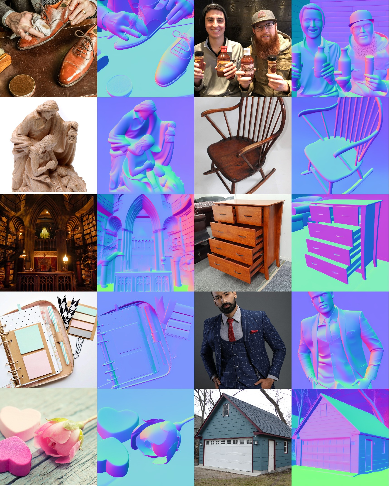
Image-to-Albedo
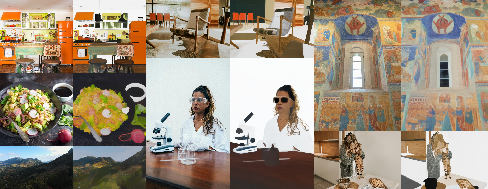
Image-to-Irradiance
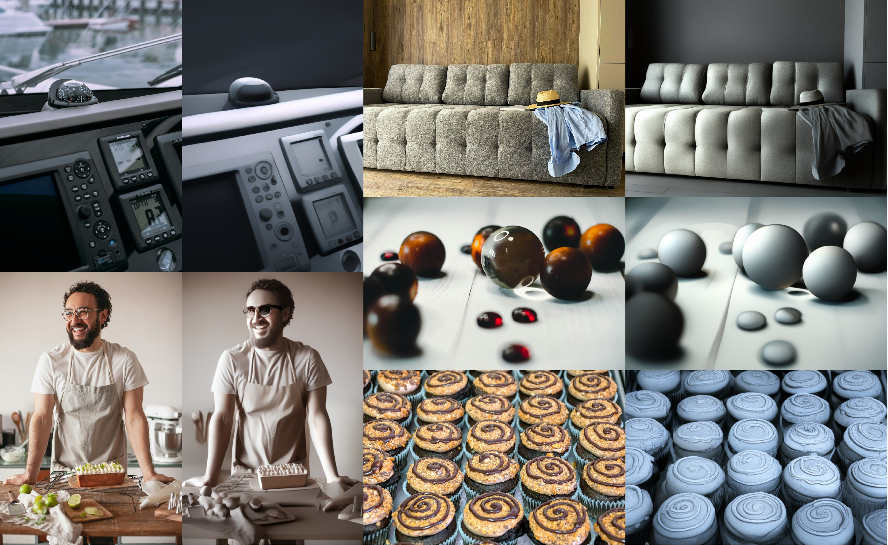
Image-to-Metallicity
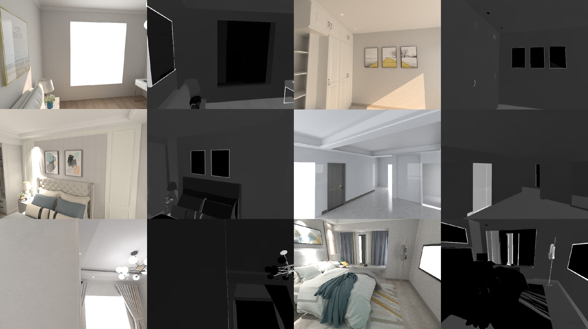
Image-to-Roughness
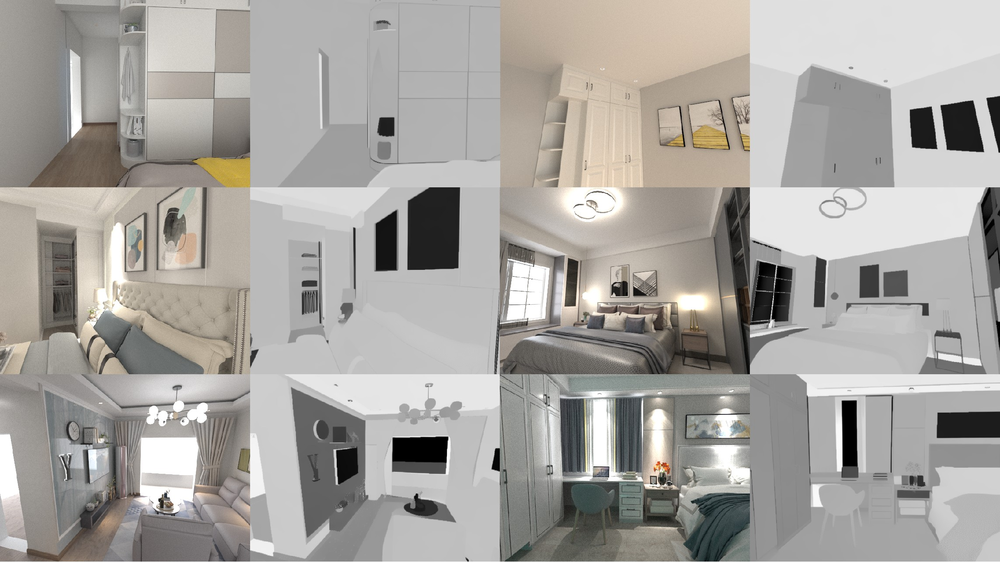
Image-to-Semantic Segmentation
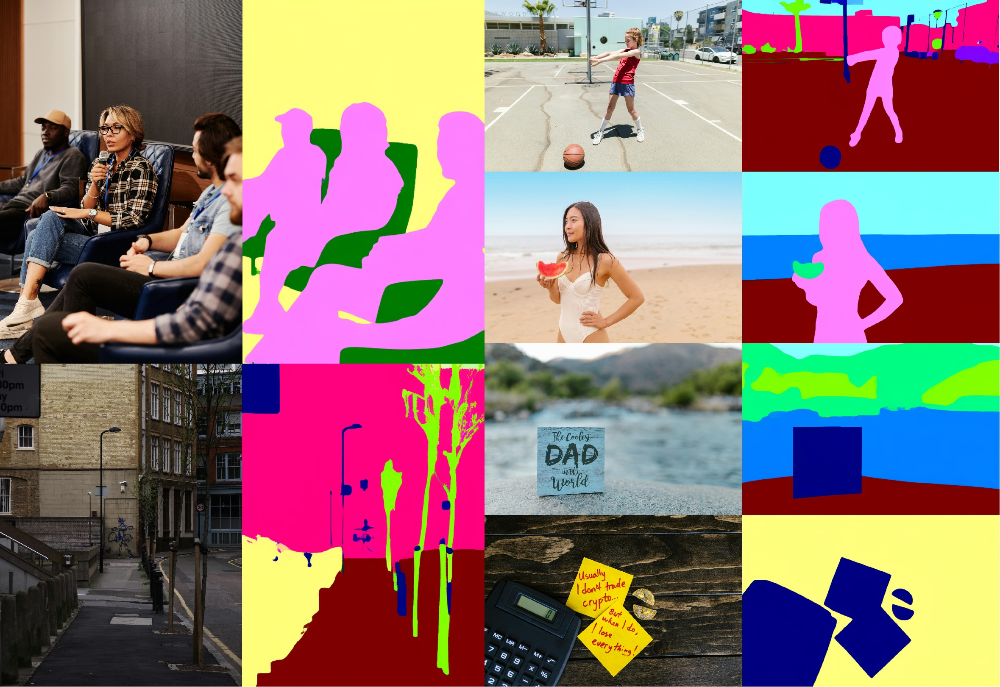
Image-to-Dichotomous Segmentation
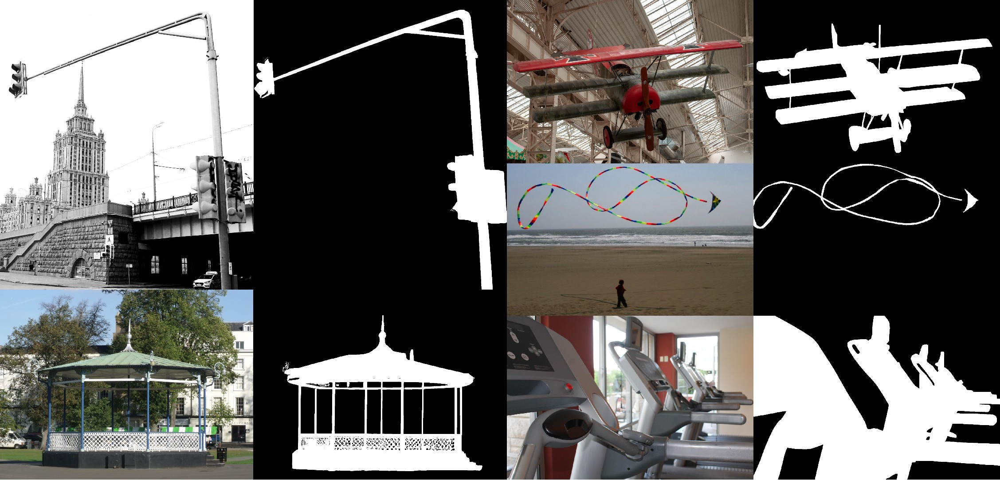
Image-to-Line Art
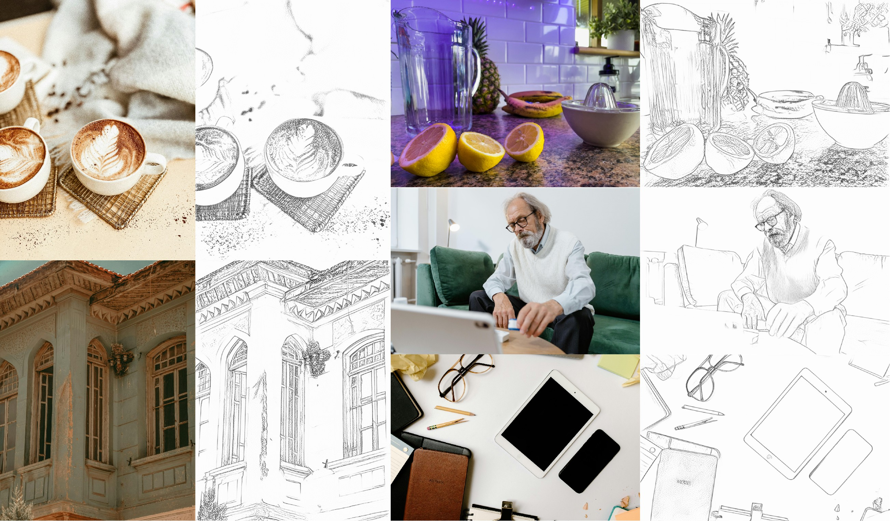
Image-to-Edge Detection
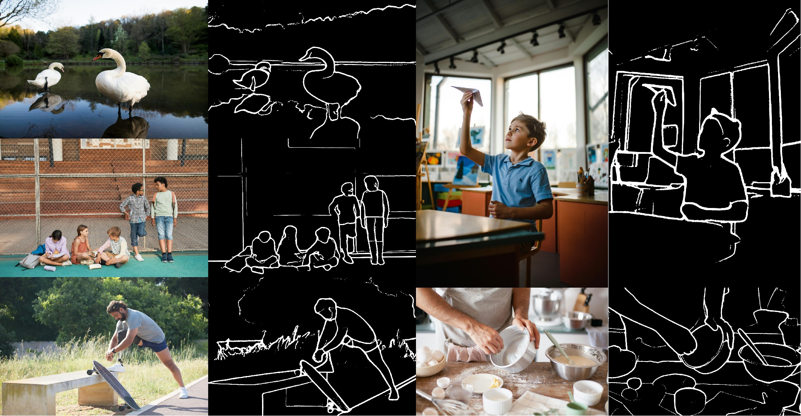
Image-to-Human Skeleton
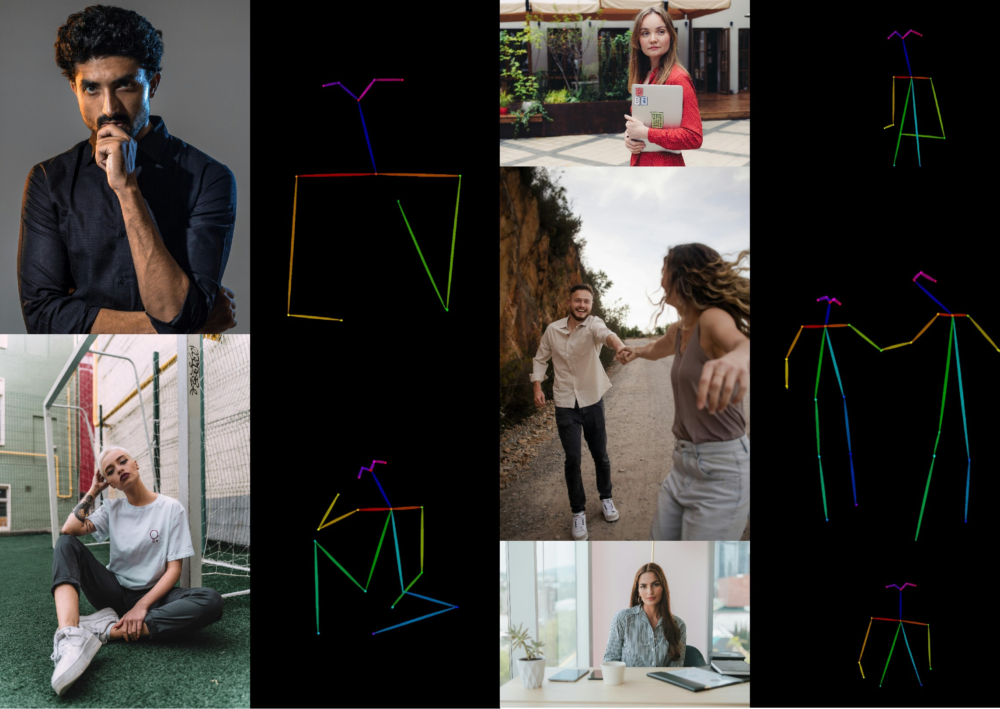
Image-to-DensePose
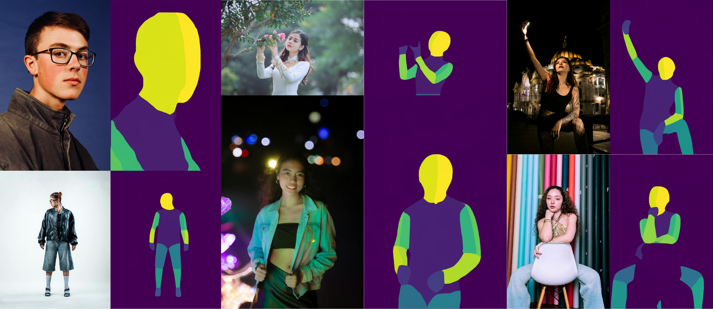
Image-to-Animal Pose
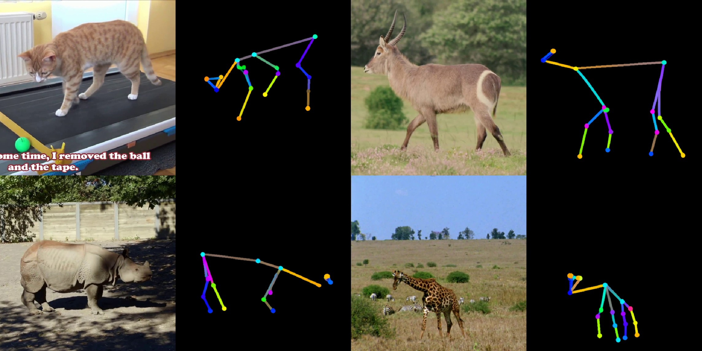
Image-to-Line Segment
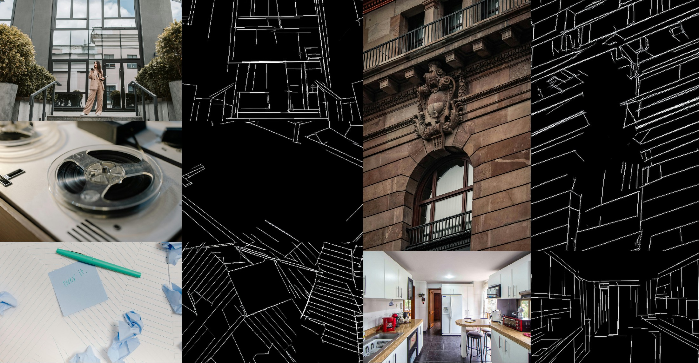
BibTeX
@inproceedings{zhao2026unipercept,
title={UniPercept: A Unified Diffusion Model for Generalizable Visual Perception},
author={Zhao, Zuyan and He, Zhenliang and Kan, Meina and Shan, Shiguang and Chen, Xilin},
journal={IEEE/CVF Conference on Computer Vision and Pattern Recognition (CVPR)},
year={2026}
}